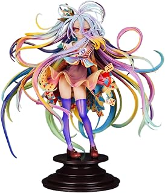
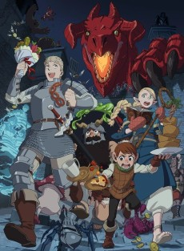
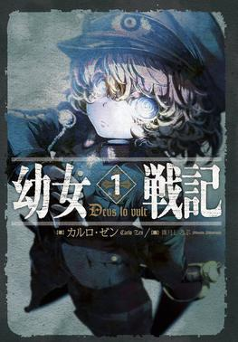
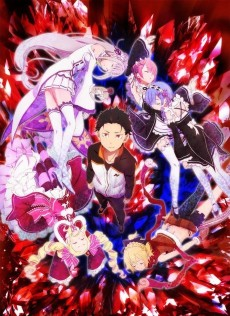
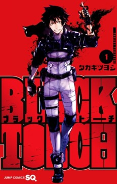

86 EIGHTY-SIX
A Republic’s lie, a frontline squadron, and the human voices it tries to erase.
OPEN REVIEW →format(webp))
I GOT A CHEAT SKILL IN ANOTHER WORLD
A dual-world wish-fulfilment story, reviewed alongside the new Season 2 announcement.
OPEN REVIEW →
DON’T TOY WITH ME, MISS NAGATORO
OPEN REVIEW →
MY HAPPY MARRIAGE
OPEN REVIEW →
MUSHOKU TENSEI: JOBLESS REINCARNATION
OPEN REVIEW HUB →
KAIJU GIRL CARAMELISE
OPEN REVIEW →
FROM OLD COUNTRY BUMPKIN TO MASTER SWORDSMAN
OPEN REVIEW →
NO GAME NO LIFE
OPEN REVIEW →
ONE PIECE: LAST FIVE EPISODES
OPEN REVIEW →
HORIZON IN THE MIDDLE OF NOWHERE
OPEN REVIEW HUB →
SWORD ART ONLINE
OPEN REVIEW HUB →
DEMON SLAYER: INFINITY CASTLE I
OPEN REVIEW →
YOUR LIE IN APRIL
OPEN REVIEW →
A SILENT VOICE
OPEN REVIEW →
FRIEREN: BEYOND JOURNEY’S END
OPEN REVIEW →
BLUE LOCK
OPEN REVIEW →
MY DEER FRIEND NOKOTAN
OPEN REVIEW →
DELICIOUS IN DUNGEON
OPEN REVIEW HUB →
SAGA OF TANYA THE EVIL
OPEN REVIEW →I WANT TO LOVE YOU TILL YOUR DYING DAY
OPEN REVIEW →
RE:ZERO
OPEN REVIEW →
BLACK TORCH
OPEN REVIEW →
DARLING IN THE FRANXX
OPEN REVIEW →
SENTENCED TO BE A HERO
OPEN REVIEW →format(webp))
TOMB RAIDER KING
OPEN REVIEW →format(webp))
CHAINSMOKER CAT
OPEN REVIEW →format(webp))
BLACK CLOVER
OPEN REVIEW →format(webp))
NARUTO
OPEN REVIEW →
REINCARNATED AS A SLIME
OPEN REVIEW →
SO I’M A SPIDER, SO WHAT?
OPEN REVIEW →
ATTACK ON TITAN
OPEN REVIEW →
ONE-PUNCH MAN
OPEN REVIEW →format(webp))
So What’s Wrong with Getting Reborn as a Goblin?
Akira’s goblin reincarnation gives a familiar isekai advantage a different set of limits to prove itself against.
OPEN REVIEW →format(webp))
REINCARNATED AS A SWORD
Fran and her sentient sword make a capable partnership, though its level-up loop can sometimes flatten the stakes.
OPEN REVIEW →
IS IT WRONG TO TRY TO PICK UP GIRLS IN A DUNGEON?
Bell Cranel’s earnest climb through Orario grows into a long-running fantasy adventure, with fan-service and uneven pacing as trade-offs.
OPEN REVIEW →
MY HERO ACADEMIA
Izuku’s Quirkless origin gives this superhero saga a sincere core, even as its long run stretches the pacing.
OPEN REVIEW →format(webp))
THE EMINENCE IN SHADOW
Cid’s secret-mastermind fantasy becomes an absurd conspiracy when his invented cult turns out to be real.
OPEN REVIEW →
HUNTER X HUNTER (2011)
Gon’s search for his father grows into a changing, tactical adventure with real emotional weight.
OPEN REVIEW →
JUJUTSU KAISEN
Stylish curse battles carry a story that keeps their emotional consequences in focus.
OPEN REVIEW →
FULLMETAL ALCHEMIST
A review of both adaptations, with a clear distinction between the 2003 series and Brotherhood.
OPEN REVIEW →
THE LAID-OFF CHEAT-GRANTING MAGE
Rein’s reclaimed enchantments give a familiar guild-expulsion premise an early boost; the season is still airing.
OPEN REVIEW →
WITCH HAT ATELIER
Coco’s apprenticeship makes magic a craft, with wonder balanced by rules and responsibility.
OPEN REVIEW →
BLEACH
Ichigo’s supernatural saga brings a memorable visual style, with filler and long-run pacing as caveats.
OPEN REVIEW →format(webp))
FAIRY TAIL
A warm guild-family adventure whose emotional resets and long watch are part of the trade-off.
OPEN REVIEW →
CYBERPUNK: EDGERUNNERS
David’s Night City story is a short, high-impact tragedy about limits, loyalty, and ambition.
OPEN REVIEW →
HEAVENLY DELUSION
Kiruko and Maru’s search for Heaven crosses with a sheltered nursery’s unsettling mysteries.
OPEN REVIEW →
VINLAND SAGA
Thorfinn’s journey turns a revenge story into a searching argument about violence and change.
OPEN REVIEW →
MY DRESS-UP DARLING
Cosplay and craft give Gojo and Marin’s sweet relationship a creative center.
OPEN REVIEW →
SAKAMOTO DAYS
A retired hitman’s peaceful shop life collides with inventive, over-the-top action.
OPEN REVIEW →
THE APOTHECARY DIARIES
A spoiler-light review of The Apothecary Diaries Season 1: Maomao’s medical curiosity turns palace secrets into clever, character-led mysteries.
OPEN REVIEW →
DAEMONS OF THE SHADOW REALM
A spoiler-light review of Daemons of the Shadow Realm Season 1: twin siblings, village secrets, and supernatural Daemons drive a tense fantasy mystery.
OPEN REVIEW →
JOJO’S BIZARRE ADVENTURE: PHANTOM BLOOD & BATTLE TENDENCY
A spoiler-light review of JoJo’s Bizarre Adventure: Phantom Blood and Battle Tendency, the first Joestar generations and their theatrical supernatural rivalry.
OPEN REVIEW →
ROOSTER FIGHTER
A spoiler-light Rooster Fighter review: Keiji’s absurd monster-hunting premise hides a surprisingly earnest action story about defending humanity.
OPEN REVIEW →
I WANT TO EAT YOUR PANCREAS
A spoiler-light review of I Want to Eat Your Pancreas, an intimate anime film about an unlikely friendship, illness, and the time people share.
OPEN REVIEW →
FOOD WARS! SHOKUGEKI NO SOMA
A spoiler-light Food Wars! review: Soma Yukihira’s culinary ambition fuels a loud, inventive cooking competition anime with a fan-service caveat.
OPEN REVIEW →
GINTAMA
A spoiler-light Gintama review: odd jobs in an alien-occupied Edo become a long-running mix of absurd comedy, samurai action, and surprisingly heartfelt arcs.
OPEN REVIEW →
RENT-A-GIRLFRIEND
A spoiler-light Rent-a-Girlfriend review: Kazuya’s rented-date arrangement becomes a long, messy romance that thrives on awkward comedy and slow-burn tension.
OPEN REVIEW →
SPY x FAMILY
A spoiler-light Spy x Family review: a secret agent’s cover family becomes a warm, funny balancing act between espionage, school life, and genuine affection.
OPEN REVIEW →
SOLO LEVELING
A spoiler-light Solo Leveling review: Sung Jinwoo’s rise from the world’s weakest hunter is a sleek power fantasy driven by escalating dungeon battles.
OPEN REVIEW →
KONOSUBA: GOD’S BLESSING ON THIS WONDERFUL WORLD!
A spoiler-light KonoSuba review: Kazuma’s fantasy-party adventure thrives on chaotic chemistry, comic timing, and a deliberately dysfunctional cast.
OPEN REVIEW →
KAIJU NO. 8
A spoiler-light Kaiju No. 8 review: Kafka Hibino’s unlikely transformation gives a monster-battling series a grounded story about second chances and belonging.
OPEN REVIEW →
LYCORIS RECOIL
A spoiler-light Lycoris Recoil review: Chisato and Takina’s café partnership balances stylish action with questions about safety, choice, and the system behind it.
OPEN REVIEW →
ID: INVADED
A spoiler-light ID: INVADED review: detective Sakaido investigates killers through surreal mindscapes, where each clue complicates identity and motive.
OPEN REVIEW →
CHAINSAW MAN
A spoiler-light Chainsaw Man Season 1 review: Denji’s desperate wish for an ordinary life collides with brutal devil-hunting work and a strange new power.
OPEN REVIEW →
MOB PSYCHO 100
A spoiler-light Mob Psycho 100 review: Shigeo “Mob” Kageyama’s psychic power is spectacular, but the series is really about growing into yourself.
OPEN REVIEW →
THE DANGERS IN MY HEART
A spoiler-light The Dangers in My Heart review: Kyotaro and Anna’s awkward first connection grows into a careful, deeply felt coming-of-age romance.
OPEN REVIEW →